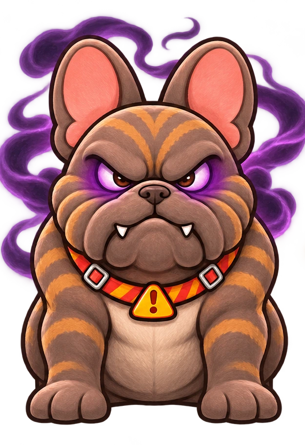
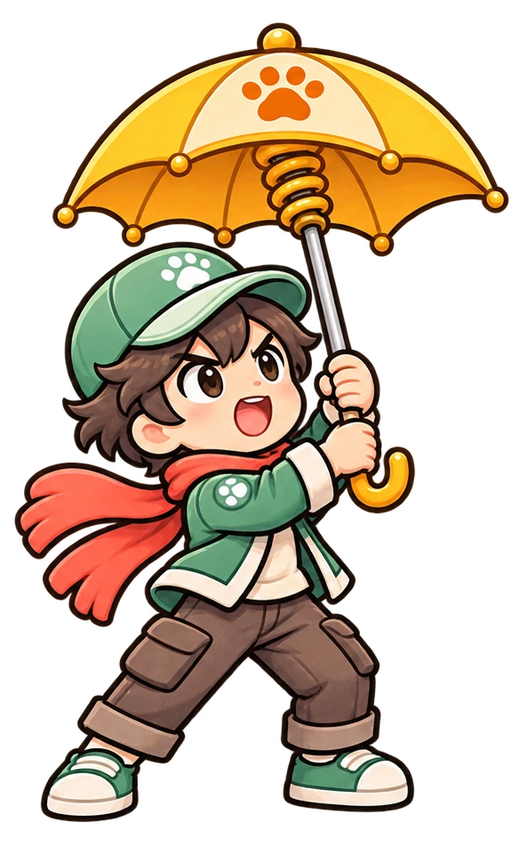
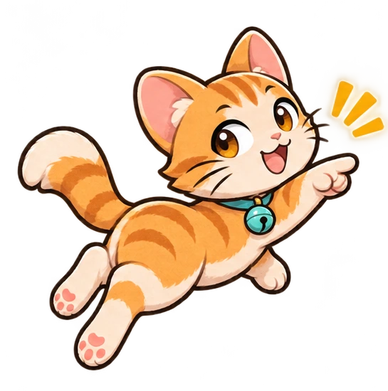
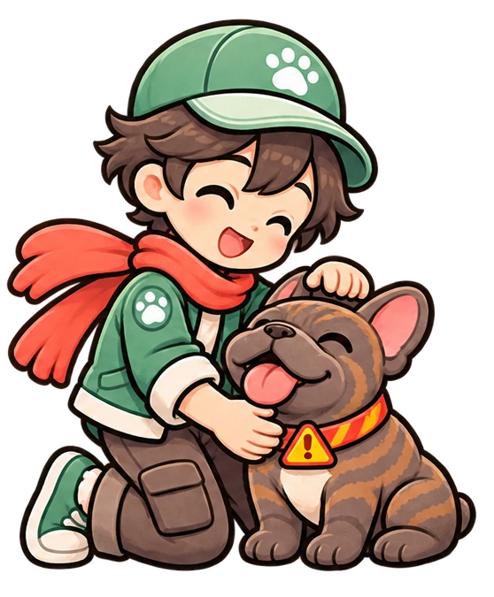
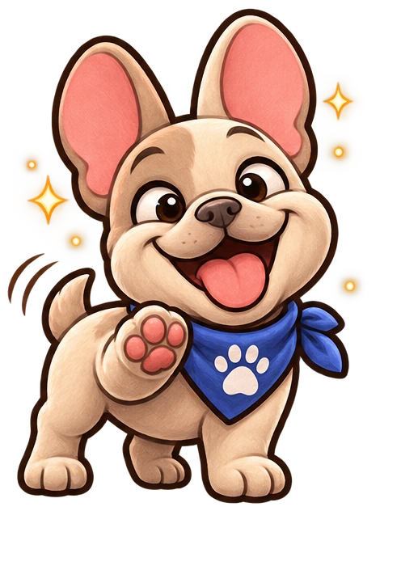

三路移动，找准落点
目标从左、中、右三路落下。先跑到它的下方，再看准光环，把握出手的瞬间。
AD或 ← / → 移动
PC / WINDOWS · IN DEVELOPMENT
雨中的救援伙伴
跟着引路猫，穿过黑雾。
接住猫咪、弹开失控的大狗，
把熟悉的那个小伙伴，带回来。



角色原画场景组合 · 非实机画面
它只是，暂时迷了路。01 / THE RESCUE
一场奇怪的黑雾，让原本温顺的小狗变得巨大、失控。那条熟悉的项圈还在，只是它已经认不出回家的路。
幸运的是，有只不受黑雾影响的猫发现了这一切。跟上它的脚步，拿起篮子和伞，在一次次接挡之间，找回藏在黑雾里的朋友。
“那不是怪物，是被黑雾困住的小狗。”— 引路猫
WATCH THE RESCUE
开发版实机首曝 · 第一关完整救援
三路接挡、Boss 破防与伙伴归来。
02 / FIND YOUR TIMING
接住信任，弹开黑雾。
两种动作，一场越来越默契的救援。
画面来自当前开发版本；正式发行内容可能调整。
目标从左、中、右三路落下。先跑到它的下方，再看准光环，把握出手的瞬间。
用篮子接住猫咪，用伞弹开受控的大狗。连续正确操作，积累破防机会。
Boss 战连续成功 8 次后，下一次有效弹反驱散一层黑雾。迎接更快的第二阶段，完成最后的救援。
猫 → 狗 → 猫，回复一颗心；狗 → 猫 → 狗，获得一次护盾。满血时，回复会存成急救包，留给更需要的时刻。
BEYOND THE MIST
失误会打断连击，
但不会让已经驱散的黑雾重来。
你可以挑战更快的追加组合，赢得专属合照。
也可以按照自己的步调完成救援——
伙伴的归来，不需要完美分数。
03 / FRIENDS TO BRING HOME
走过公园、面包店和雨巷。
每一份获救的记忆，都值得留在伙伴册里。

看起来凶，其实很黏人。
最喜欢公园长椅和黄色小球。

热情又好奇，爱陪在朋友身边。
门廊里，总飘着刚出炉的面包香。

安静、细心，熟悉后总会跟着你。
喜欢雨后的水洼与安静的小巷。
翻翻伙伴册与回忆合照，换一把新颜色的伞，或来一局 60 秒每日天气挑战。
THE NEXT CHAPTER
《It Rains Cats n Dogs · 雨中的救援伙伴》
正在为 PC 之旅做准备。
计划平台：Windows PC · 发售日期与售价待公布
商店页面开放后，这里将提供愿望单入口。